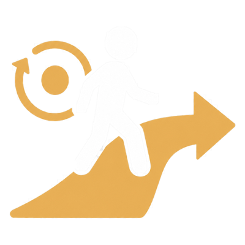
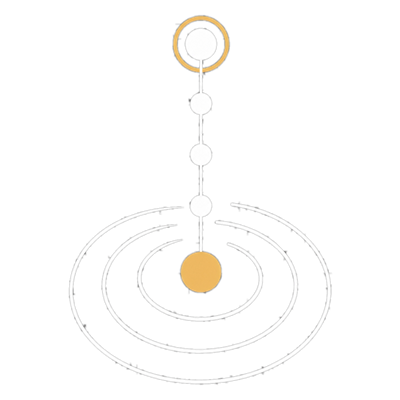

EQで変わる。
人生も、
組織も、社会も。
人と組織の可能性をEQでひらく。
株式会社BrifuのEQ Platform。
Brifuは、EQの学び・自己成長・人材育成・ビジネス活用までをつなぐEQ Platformを提供しています。
学ぶ。成長する。 人を育てる。ビジネスに活かす。
人と組織のEQを育てる、4つの事業。
HOVER A NODE
カーソルを合わせてください
つながっている学びが光ります。球をクリック（タップ）すると、その球へ近づきます。
つながり
- EQ Platform：4つの事業の中心
- ① EQ Academy：EQ知識実践スキルコース（EQ活用スキル講座／EQ育成スキル講座）、EQ認定事業（ナビゲーター認定／インストラクター認定／コーチ認定）
- ② EQ Humanity：EQプロ育成コース
- ③ EQTM：学ぶ（EQ Skills／EIA）、実践する：EQ Growth（理念実践プログラムコース／自己能力実践プログラムコース）
- ④ EQ Business Nexus：事業・組織に合わせた個別コンサルティング
私は、 どこから始めればいい？
あなたに合うEQの入口を見つける。
- EQを学びたい。
- 自分自身を成長させたい。
- 人を育てられるようになりたい。
- 組織やビジネスに活かしたい。
目的によって、最適な入口は異なります。
まずはEQ Gateで体験しながら、今のあなたに合う入口を見つけてください。
経営・組織のご相談は 相談する からどうぞ。
社会を変える前に、 変化が起きる場所がある。
それは、技術でも、制度でも、仕組みでもなく、人の心。
心が変わると、
- 考え方が変わる
- 感じ方が変わる
- 選択が変わる
- 行動が変わる
- 人との関係が変わる
だからBrifuは、「人の心」にイノベーションを起こします。
だから、自分の心を知る力 「EQ」が必要。
EQ（Emotional Intelligence）は、「感情をコントロールする力」だと思われがちです。
私たちの定義は少し違います。感情を、認識を、行動を、
自分と相手の可能性を活かすために使う力。
それがEQです。
EQとは、
自分と人の可能性を活かす力。
自分の感情に気づき、認識を見直し、目的から選び、行動する。
相手の感情に目を向け、認識の違いを確かめ、本音で対話する。この往復が、自分にも相手にも「可能性」を残します。
- SELF自己理解
感情・価値観・認識を知る
- EXPRESS感情の言語化
自分の状態を言葉にする
- OTHERS他者理解・対話
相手の認識に関心を向ける

ACTION意思決定・行動目的から選び、振り返る


では、EQはどうすれば高まるのか。
鍵は、 「認識」にあります。
- 場面同じことが起きても
- 感情どう感じるか
- 認識どう受け取るか
（世界の見え方） - 行動何を選ぶか
同じ場面でも、どう感じ、どう受け取るか（＝認識）によって、選ぶ行動は変わります。
EQを高めるとは、この「感情 → 認識 → 行動」の流れに気づき、認識を更新できるようになること。
その流れを体系化したのが、Brifu独自のメソッド「EQ認識理論」です。
人は、 「認識した世界」の中で 行動する。
感情が認識をつくり、認識が選択を決め、選択が行動になり、行動が結果を生む。
その結果を振り返ることで、認識が更新される。私たちは、この循環そのものを変えていきます。
人は認識によって行動する。認識を整え、感情を力に変え、豊かな人生と社会を創る。— EQ認識理論
EQ認識理論が、 Brifuの強みである理由。
スキル（横成長）は、認識の成熟（縦成長）に支えられて、はじめて本当に機能します。
Brifuは、その土台である「認識」から、人と組織を変えていきます。
-
01
現場から生まれた理論
延べ2,000人以上の人材育成・コンサルティング、1万人以上の人の心との向き合い、数千人規模の組織づくり。その現場で「なぜ、人は変われないのか」と問い続け、体系化しました。
- 人材育成・コンサルティング
- 2,000人以上
- 向き合ってきた人の心
- 10,000人以上
-
02
「スキル」の前に、「認識」から変える
知識やスキルを身につける横成長だけでなく、物事の見え方そのものが変わる縦成長を扱います。見え方が変わると、同じスキルでも、使ったときの質が変わります。
-
03
学ぶ・高める・育てる・活かすを、ひとつの理論で
EQ Platformの4つの事業（EQ Academy／EQ Humanity／EQTM／EQ Business Nexus）は、すべてEQ認識理論を土台にしています。認識を言葉にする道具「EQコアカード®」も、代表自らが開発しました。
- 理論を土台にした事業
- 4事業
一人の変化が、 人・チーム・組織・社会へ広がっていく。
EQによって生まれる変化は、自分から始まり、次の人へ伝わっていきます。
 自分自分の心が分かる
自分自分の心が分かる 人との関係本音で対話できる
人との関係本音で対話できる チーム一人ひとりが活きる
チーム一人ひとりが活きる 組織理念が行動に表れる
組織理念が行動に表れる 社会お互いを大切にする社会へ
社会お互いを大切にする社会へ

言葉にならない気持ちを、 カードで言葉にする。
感情・価値観・認識・行動を言葉にする、カード型ツール「EQコアカード®」。
EQ Gateでは、オンラインで体験できます。
代表・波多野輝未の著書も 物販・書籍 でご紹介しています。

人の心に、イノベーションを起こす。
人の心にイノベーションが起きることで、自分も相手も大切にできる人が増えていく。その積み重ねによって、「お互いを大切にする社会」が生まれる。
私たちBrifuの目的は、「人の心にイノベーション」を起こし、社会に「真のイノベーション」を創り出すこと。技術や制度を変える前に、それを使う人の心が変わること。
すべては、そこから始まると考えています。
私たちが大切にしていること

PURPOSE
目的
「人の心にイノベーション」を起こし、社会に「真のイノベーション」を創り出す。

MISSION
使命
EQを高めて自分と人の可能性を信じ、人・組織の真の幸せを導けるリーダーを輩出する。

VISION
目指す理想の姿
一人ひとりが感情を大切にし、お互いを大切にする社会をつくる。

VALUE
私たちが大切にする価値観
① 全感謝・貢献 —— すべての感情や出来事を大切にする。
② 可能性・挑戦 —— 自分と人の可能性を信じる。
③ 心理的安全性 —— 安心して本音で関われる関係を育む。
講座・研修・法人向け支援・ 商品について、 お気軽にご相談ください。
ご相談内容がまだ整理できていなくても大丈夫です。いまの状況をお聞きするところから始めます。
- EQ Academy・EQTMなどの講座について
- 法人向けの研修・組織づくりのご相談
- EQコアカード・書籍のご購入について
メール：info@brifu.co.jp